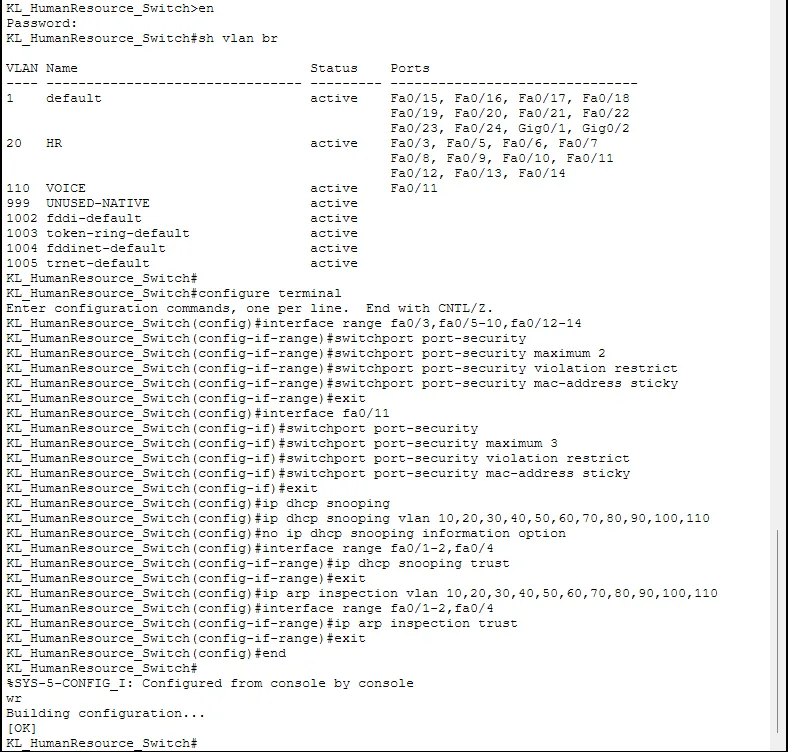
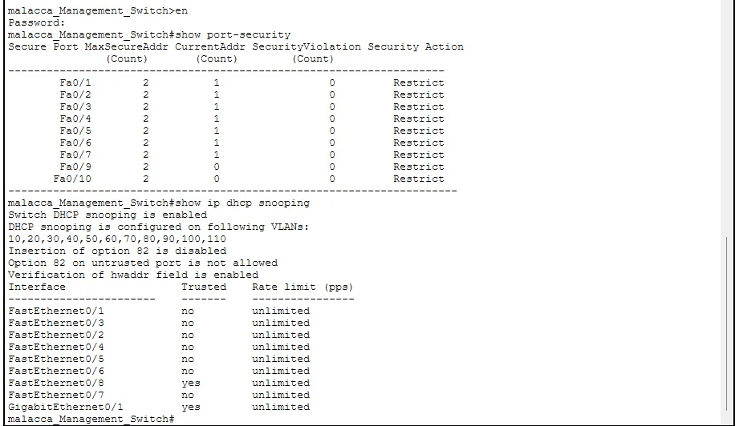
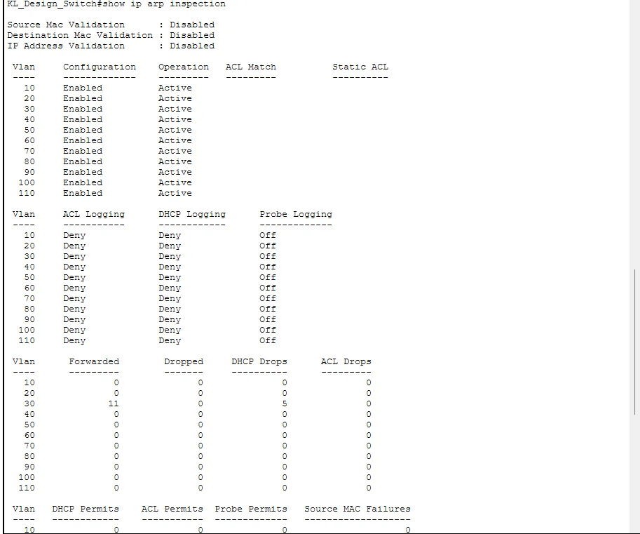

An access switch port is the first place an attacker, or a careless user with the wrong cable, can touch your network. For my networking assignment I applied the same Layer 2 security template to every access switch across four sites. Port security was the starting point, but it is only one of four protections, so this article covers all of them: which attack each one answers, the commands, and how I checked them.
Four attacks, four defences
- MAC flooding fills the switch's address table with fake MAC addresses until it floods traffic out of every port. Defence: port security.
- DHCP starvation and rogue DHCP servers exhaust the pool or hand out a false gateway. Defence: DHCP snooping.
- ARP spoofing maps the gateway's IP to an attacker's MAC for a man-in-the-middle. Defence: Dynamic ARP Inspection (DAI).
- VLAN hopping abuses trunk negotiation or double tagging. Defence: disable DTP, set trunks explicitly and use an unused VLAN as native.
Port security on the access ports
I allowed two MAC addresses per port, learned them automatically with the sticky option, and set the violation mode to restrict. Two addresses covers a PC plus an IP phone behind it.
interface range fa0/3, fa0/5 - 13
switchport port-security
switchport port-security maximum 2
switchport port-security mac-address sticky
switchport port-security violation restrictThe three violation modes behave differently. Shutdown disables the port and needs an administrator to bring it back. Restrict drops frames from unknown devices and logs the event. Protect drops silently. I chose restrict so a violation would be visible in the logs without turning a typing mistake into an outage.

DHCP snooping and DAI
DHCP snooping classifies each port as trusted or untrusted. Only the uplinks are trusted, so a rogue DHCP server plugged into an access port gets ignored. The snooping table of IP-to-MAC bindings is then reused by Dynamic ARP Inspection to check ARP packets.
ip dhcp snooping
ip dhcp snooping vlan 20
ip arp inspection vlan 20
!
interface fa0/1
ip dhcp snooping trust
ip arp inspection trustThere is one catch I had to deal with. My IoT server used a static IP address, so it had no DHCP snooping binding, and DAI dropped its ARP replies. That broke device registration in that VLAN. I solved it by marking only that server's port as DAI-trusted. This is an acceptable trade-off for a single known static host, and it is the kind of thing that never appears in a tutorial.
Trunk hardening
On trunks I turned off Dynamic Trunking Protocol with switchport nonegotiate, configured the trunk mode explicitly and used VLAN 999 as the native VLAN, since nothing else lives on it.
Verification
For each switch I used show port-security, show ip dhcp snooping, show ip arp inspection and show interfaces trunk. The Malacca management switch showed a maximum of two addresses per port, restrict as the action, and snooping enabled across the department VLANs with only uplinks trusted.


Sticky addresses and clearing them
With the sticky option the switch learns the MAC addresses it sees and writes them into the running configuration. That is convenient, but it also means a device you replace will be blocked until you clear the old entry. show port-security address lists what has been learned, and clear port-security sticky removes the learned entries. Save the configuration afterwards, or the sticky addresses disappear on the next reload.
Common mistakes
- Applying DAI before DHCP snooping has built its table. Hosts then lose their ARP replies.
- Forgetting to trust the uplink ports for snooping and DAI. DHCP then stops working for the whole VLAN.
- Using shutdown mode on ports that PCs move between. A single moved laptop can disable a port.
- Treating port security as complete. It stops MAC flooding, not ARP spoofing or rogue DHCP.
Port security controls who may connect. Access lists decide what they may reach; see Cisco ACL Basics for that side. And to see how the VLANs underneath are built, read VLANs Explained with Cisco Commands.